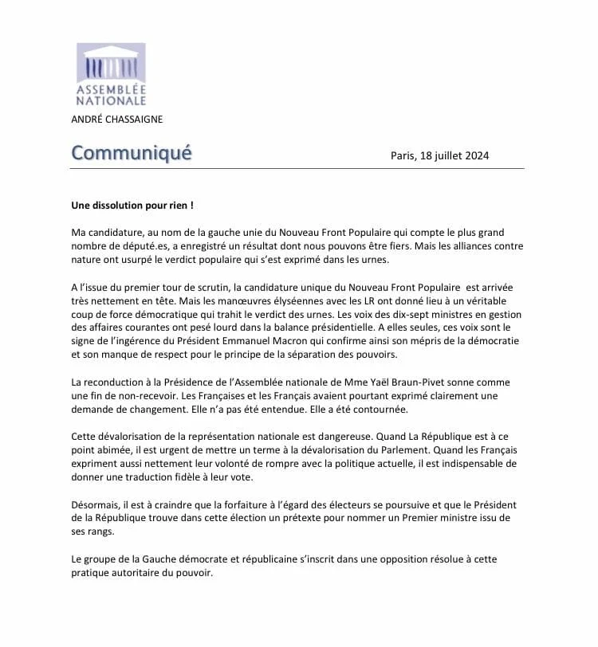

Communiqué relayé
Présidence de l’Assemblée nationale. Les députés communistes contestent le vote des ministres-députés
Date indiquée par Facebook · 19 juillet 2024
Repères éditoriaux
Le document d’origine critique la participation au vote de ministres qui étaient aussi députés. Nous avons relayé le communiqué et le visuel.
Texte conservé avec la publication
Un nouveau dysfonctionnement du vieux système de la Vᵉ République, le vote de 18 ministres-députés.

Sources
Archive rouge · export Facebook · AR-0002-FB-01316
À lire aussi · « On prend les mêmes et on recommence ! » (Fabien Roussel) · Le lien d’origine